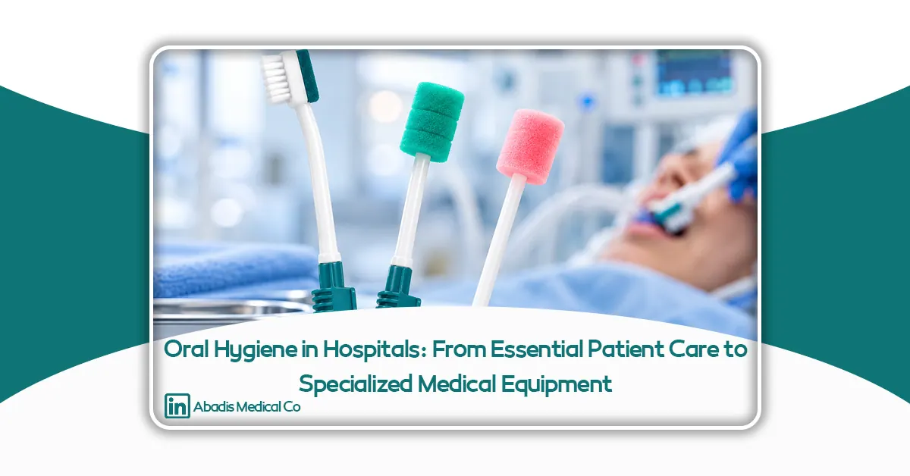
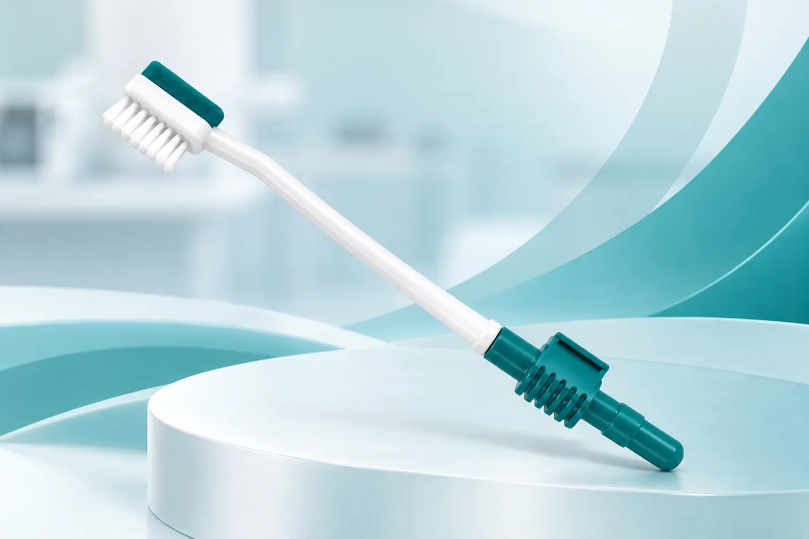
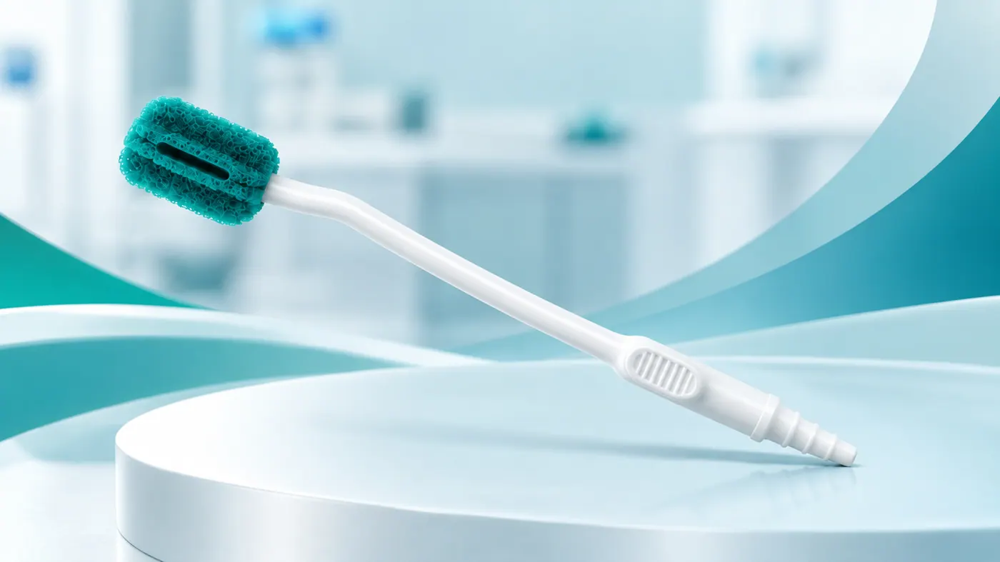
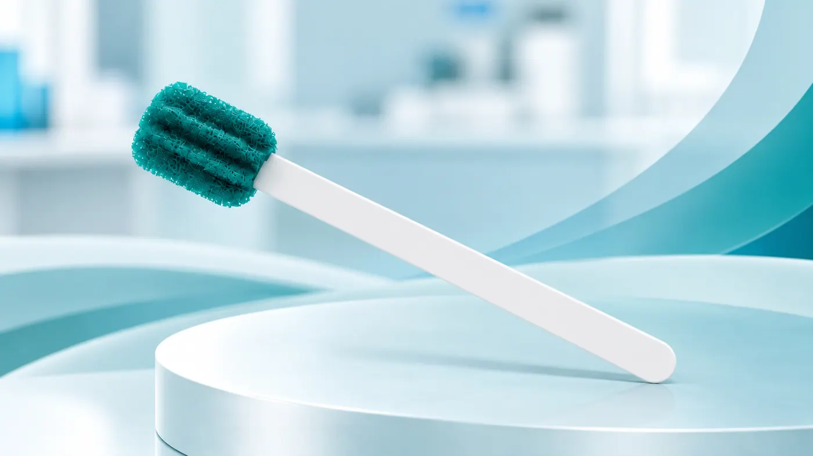
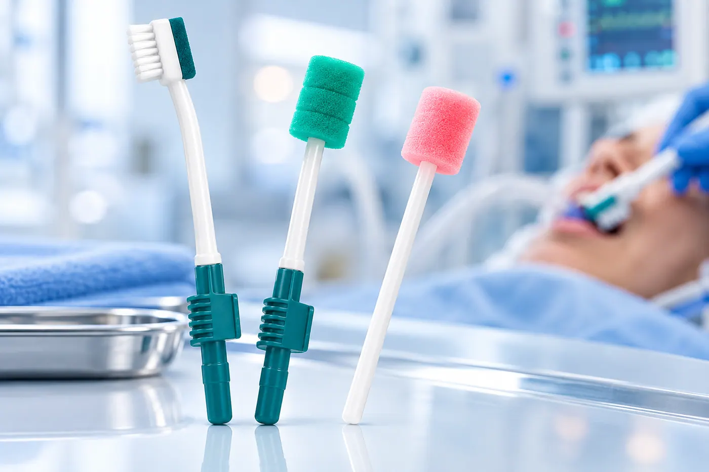

Introduction: Why Can Oral Hygiene Affect Lung Health in Hospitalized Patients?
At first glance, oral care for hospitalized patients may seem like a simple hygiene practice. However, in healthcare environments, particularly intensive care units (ICUs), oral health is closely associated with more complex issues, including microbial accumulation, aspiration of oral secretions, and respiratory infections.
The human mouth naturally contains a diverse community of bacteria and other microorganisms that form the oral microbiome. Under normal circumstances, saliva, tongue movements, chewing, and regular oral hygiene help maintain a balanced oral environment. Hospitalization, however, can disrupt this balance.
Patients receiving mechanical ventilation, those with reduced consciousness, and individuals with impaired swallowing often depend on healthcare professionals for oral hygiene. Reduced saliva production, dry oral mucosa, dental plaque accumulation, and impaired natural oral clearance may create conditions that favor an undesirable increase in microbial burden.
Furthermore, aspiration of oral secretions containing microorganisms into the lower respiratory tract is one potential pathway for the development of aspiration pneumonia, particularly in vulnerable patients.
For these reasons, oral hygiene in hospitals involves much more than cleaning teeth. It is an important component of comprehensive patient care.
In recent years, specialized tools such as disposable suction toothbrushes, disposable suction swabs, and disposable foam oral swabs have been used to support oral hygiene procedures in clinical settings.
But how do these three products differ? Can a foam swab replace a toothbrush? Why are some oral care devices equipped with suction capabilities?
This article examines these questions based on scientific principles and available clinical evidence.
-
The Relationship Between Oral Hygiene and Hospital-Acquired Infections
Dental Plaque: A Microbial Biofilm
Dental plaque is not simply a collection of food particles. It is a type of biofilm: an organized structure in which microorganisms adhere to tooth surfaces within a protective matrix.
This structure can protect microorganisms against certain environmental factors, making them more difficult to remove.
In hospitalized patients, particularly when regular oral hygiene is not maintained, plaque accumulation may increase. In some critically ill patients, microorganisms associated with healthcare-associated infections may also colonize the oral cavity.
Consequently, mechanical plaque removal through toothbrushing remains an important component of oral care.
The Protective Role of Saliva
In addition to keeping oral tissues moist, saliva contributes to natural oral cleansing, pH regulation, and local defense mechanisms.
Patients receiving certain medications, experiencing dehydration, or breathing through their mouths may develop reduced salivary flow and dry mouth, also known as xerostomia.
Dry mouth may cause mucosal cracking, discomfort, swallowing difficulties, and the accumulation of thick secretions.
Therefore, moisturizing the oral mucosa is another important objective of oral care, although it serves a different purpose from dental plaque removal.
Ventilator-Associated Pneumonia (VAP)
Ventilator-associated pneumonia is a lung infection that develops in patients receiving invasive mechanical ventilation.
In these patients, the presence of an endotracheal tube and impairment of normal respiratory defense mechanisms may increase the risk of contaminated secretions entering the lower airways.
Oral care is one component of infection prevention programs in intensive care settings.
However, improving oral hygiene should not automatically be equated with a proven reduction in pneumonia.
Scientific studies indicate that oral care interventions can improve oral hygiene, but the independent effectiveness of individual devices in reducing VAP has not been conclusively established across all clinical situations.

-
What Is a Disposable Suction Toothbrush and How Does It Work?
A disposable suction toothbrush is a medical oral care device that combines two functions: mechanical tooth cleaning and suctioning of oral secretions.
With a conventional toothbrush, patients typically rinse and expel water, toothpaste, and debris after brushing.
However, this process may be difficult or unsafe for patients with reduced consciousness, swallowing difficulties, or mechanical ventilation.
Suction toothbrushes are designed to help healthcare professionals manage these challenges.
Structure and Operating Mechanism
A disposable suction toothbrush typically consists of:
- A toothbrush head with soft bristles
- A handle containing an internal suction channel
- A connector for attachment to compatible suction tubing
During use, the toothbrush bristles mechanically remove plaque and superficial debris from tooth surfaces.
At the same time, negative pressure generated by the suction system can remove excess saliva, fluids, and oral secretions.
Some models also include a suction-control opening or valve on the handle, allowing the operator to regulate suction during the procedure.

Why Are Suction Toothbrushes Important in ICUs?
In mechanically ventilated patients, access to the oral cavity may be restricted by endotracheal tubes, tube-securing devices, and limited patient mobility.
By combining brushing and suction in a single instrument, suction toothbrushes can make oral care procedures more manageable for healthcare professionals.
Their main applications include:
- Removing dental plaque in patients who depend on nursing care
- Suctioning excess oral secretions during toothbrushing
- Providing oral hygiene for mechanically ventilated patients
- Supporting fluid management in patients with swallowing difficulties
- Facilitating oral care for patients with severe mobility limitations
Advantages of Disposable Suction Toothbrushes
The main practical advantage is the ability to perform mechanical cleaning and suction simultaneously.
This combination can be particularly useful when patients cannot independently manage oral fluids.
Nevertheless, suction toothbrushes must be used with appropriate attention to airway protection, suction pressure, and clinical oral care protocols.
Furthermore, the presence of a suction function does not necessarily make a suction toothbrush superior to every conventional toothbrush in removing dental plaque.
Bristle quality, brushing technique, and the patient’s oral condition also influence cleaning effectiveness.
-
What Is a Disposable Suction Swab?
A disposable suction swab is another specialized oral care device designed for gentle cleaning of the oral cavity while simultaneously removing secretions.
Unlike a suction toothbrush, which uses bristles to clean tooth surfaces, a suction swab generally features a soft foam or sponge head with an internal suction pathway.
This design allows gentler contact with oral tissues and is commonly intended for cleaning the tongue, cheeks, gums, and oral mucosa.

Structure of a Suction Swab
A suction swab generally consists of three main components:
Foam or sponge head: Designed for gentle cleaning of oral tissues and removal of superficial debris.
Handle with an internal suction channel: Allows secretions to travel through the device toward the suction system.
Suction connector: Enables attachment to compatible suction tubing or an appropriate adapter.
Some models also include a suction-control valve.
Applications of Disposable Suction Swabs
Suction swabs are particularly useful for patients requiring frequent oral care and secretion management.
Oral mucosal cleaning: Gentle cleaning of the inner cheeks, tongue, gums, and other oral surfaces.
Removal of excess secretions: Suctioning saliva and fluids during oral cleaning.
ICU patient care: Supporting oral hygiene as part of a broader care program alongside toothbrushing.
Care for patients with swallowing difficulties: Helping reduce fluid accumulation during oral care procedures.
Suction Swab vs. Suction Toothbrush
The most important difference between these devices is their primary cleaning mechanism.
A suction toothbrush uses bristles to mechanically clean tooth surfaces and remove dental plaque.
A suction swab, by contrast, is primarily designed for gentle cleaning of oral tissues and management of oral secretions.
Therefore, these products are not necessarily interchangeable. They may serve complementary roles within the same oral care protocol.
-
What Is a Disposable Foam Oral Swab?
A disposable foam oral swab, also known as a foam mouth swab or sponge oral swab, is a simple oral care tool used for gentle cleaning and moisturizing of the oral cavity.
It typically consists of a lightweight plastic handle and a soft foam head.
Unlike suction toothbrushes and suction swabs, conventional foam oral swabs generally do not contain an internal suction channel.
These products are intended for gentle oral cleaning and moisturizing and may be used in hospitals, long-term care facilities, elderly care settings, and supportive care environments.
Structure of a Foam Oral Swab
A foam oral swab usually consists of a lightweight handle and a porous foam tip.
The foam structure allows the swab to absorb a limited amount of an approved oral care solution and apply it to oral tissues.
The shape of the foam head varies between manufacturers. Some models feature multi-sided or contoured designs to facilitate contact with different oral surfaces.
Applications of Disposable Foam Oral Swabs
Moisturizing oral tissues: Hospitalized patients may experience dry mouth due to reduced saliva production, mouth breathing, or medication use. Foam swabs can be used to apply suitable moisturizing products.
Gentle oral cleaning: Removing superficial debris from the tongue, gums, and inner cheeks.
Elderly care: Supporting oral hygiene for individuals who require assistance from caregivers.
Supportive and palliative care: Improving patient comfort and reducing the sensation of oral dryness according to the established care plan.
Can Foam Oral Swabs Replace Toothbrushes?
Generally, no. Foam oral swabs should not be considered complete substitutes for toothbrushes.
Although some small studies have suggested that foam swabs may reduce plaque under specific conditions, toothbrushing remains a principal method of mechanical dental plaque removal in many clinical protocols.
A clinical study published in BMJ Open Respiratory Research reported improvements in oral hygiene indicators using both toothbrushes and foam swabs among mechanically ventilated patients.
However, these findings do not establish that all foam swabs are equivalent to toothbrushes in every clinical setting.
-
Suction Toothbrush vs. Suction Swab vs. Foam Oral Swab
Choosing the most appropriate oral care device requires an understanding of its structure and intended function.
| Feature | Suction Toothbrush | Suction Swab | Foam Oral Swab |
| Head design | Toothbrush bristles | Soft foam | Soft foam |
| Suction capability | Yes | Yes | Generally no |
| Dental plaque removal | Primary application | More limited | More limited |
| Oral mucosal cleaning | Possible | Primary application | Primary application |
| Secretion management | During brushing | During cleaning | Requires a separate device |
| Oral moisturizing | Secondary application | Possible | Important application |
| ICU use | Yes | Yes | Yes, as a complementary tool |

Which Product Is More Suitable for the Patient?
Product selection depends on several factors, including:
- Oral condition
- Level of consciousness
- Swallowing ability
- Amount and consistency of secretions
- Primary objective of oral care
When the main objective is mechanical plaque removal combined with secretion management, a suction toothbrush may be suitable.
When gentle mucosal cleaning and simultaneous suction are required, a suction swab may be more appropriate.
For moisturizing oral tissues and providing gentle supportive care, a foam oral swab can be a useful option.
For many hospitalized patients, combining these tools within a structured oral care protocol may be more appropriate than relying on a single device.
-
The Role of Oral Care Equipment in Hospital Infection Prevention
One of the primary reasons oral hygiene receives particular attention in healthcare facilities is its relationship with patients’ overall health and respiratory complications.
The oral cavity naturally contains numerous microorganisms.
In critically ill patients, the composition of the oral microbiome may change, and certain potentially pathogenic microorganisms may accumulate in dental plaque and oral secretions.
This issue is particularly important for mechanically ventilated patients, because aspiration of contaminated secretions into the lower respiratory tract may contribute to infection.
Oral Hygiene and Ventilator-Associated Pneumonia
Ventilator-associated pneumonia is a lung infection associated with invasive mechanical ventilation.
Hospital oral care programs may include:
- Toothbrushing
- Cleaning oral mucosal surfaces
- Managing oral secretions
- Moisturizing oral tissues
- Using appropriate oral care solutions according to clinical protocols
A Cochrane systematic review has examined oral hygiene interventions for preventing VAP in critically ill patients.
However, effectiveness varies according to the intervention and the quality of available evidence.
Consequently, a definite reduction in VAP should not be attributed to any individual oral care product without appropriate supporting clinical evidence.
The Importance of Disposable Products in Infection Prevention
Disposable oral care devices can reduce the need for cleaning and reprocessing reusable instruments.
They may also help limit contamination risks associated with inappropriate reuse or sharing between patients.
However, disposability alone does not guarantee infection prevention.
Proper hand hygiene, personal protective equipment, correct product storage, and appropriate disposal after use remain essential.
-
Proper Use of Hospital Oral Care Equipment
Correct use of suction toothbrushes, suction swabs, and foam oral swabs is important for both patient safety and care quality.
Before beginning oral care, healthcare professionals should assess the patient’s condition and oral cavity.
The appropriate equipment should then be selected according to the patient’s needs.
General Oral Care Procedure
Preparation: Perform hand hygiene, use appropriate personal protective equipment, and check product packaging integrity.
Patient assessment: Evaluate consciousness, swallowing ability, oral secretions, mucosal injuries, and aspiration risk.
Patient positioning: When clinically appropriate, position the patient semi-upright or according to the care team’s instructions.
Suction preparation: If a suction-enabled device is used, ensure proper tubing connections and adjust suction pressure according to clinical protocols and the manufacturer’s instructions.
Dental cleaning: Use a soft toothbrush or suction toothbrush to clean tooth surfaces.
Mucosal cleaning: Use an appropriate swab to gently clean the tongue, gums, and inner cheeks.
Secretion management: Remove excess fluids and debris through suction when clinically indicated.
Moisturizing: Apply approved oral moisturizing products when necessary.
Completion: Reassess the oral cavity, dispose of single-use items correctly, and document the care provided.
These steps represent a general framework and do not replace hospital-specific procedures or clinical training.
- Safety Considerations When Using Oral Toothbrushes and Swabs
Safety precautions are particularly important for hospitalized patients with reduced consciousness or swallowing difficulties.
Healthcare professionals should observe the following principles:
- Avoid excessive pressure when cleaning the gums and oral mucosa.
- Adjust suction pressure according to the patient’s condition and the manufacturer’s instructions.
- Check that the foam head is securely attached to the handle before use.
- Avoid introducing excessive fluids into the mouths of patients at risk of aspiration.
- Do not reuse products labeled for single use.
- Adapt oral care methods to patients with bleeding, mucosal injuries, or other specific oral conditions under clinical supervision.
The use of mouthwashes, including chlorhexidine, should also follow established clinical protocols.
Routine chlorhexidine use solely for VAP prevention is not recommended for all intubated patients.
-
Connecting Oral Care Equipment to Hospital Suction Systems
Suction toothbrushes and suction swabs require a compatible vacuum source to perform their suction function.
This source may be a hospital central vacuum system or an appropriate medical suction device.
A typical secretion collection system may include:
- A suction-enabled oral care device
- Connecting suction tubing
- A secretion collection canister or collection system
- Filters and vacuum-source protection components, according to system design
- A vacuum source and suction pressure regulator
The Role of Disposable Suction Liners in Secretion Collection
In compatible suction systems, disposable suction liners may be used to collect oral secretions.
Abadis Med manufactures disposable suction liners and related medical secretion management equipment.
A compatible closed collection system can support hygienic secretion management and help reduce healthcare workers’ direct contact with collected fluids.
However, connector compatibility, suction pressure limits, and device instructions must be verified before connecting oral care instruments to any medical suction system.
-
A Purchasing Guide for Hospital Oral Care Equipment
When purchasing disposable suction toothbrushes, suction swabs, or foam oral swabs, healthcare facilities should evaluate several important characteristics.
Material Quality
Materials should be suitable for their intended application and for contact with oral tissues.
Softness of the Brush or Swab Head
The cleaning head should be designed for its intended use to minimize the risk of oral tissue injury.
Connection Strength
For foam products, secure attachment of the foam head to the handle is important.
For suction-enabled devices, the quality and reliability of suction connections must also be evaluated.
Ergonomic Design
The handle should allow healthcare professionals to hold, maneuver, and control the device comfortably.
Compatibility With Hospital Equipment
For suction toothbrushes and suction swabs, compatibility with the available vacuum system and connecting tubing should be verified.
Packaging and Sterility
Single-use does not necessarily mean sterile.
Sterility status, storage conditions, and expiration dates should be determined from the product labeling and documentation.
Regulatory Compliance and Technical Documentation
Product specifications, instructions for use, and applicable regulatory documentation should be evaluated according to relevant medical device requirements.
Conclusion
Proper oral hygiene is an essential component of nursing care and patient management in hospitals.
Selecting appropriate oral care equipment can support effective oral cleaning, secretion management, and patient comfort.
Although disposable suction toothbrushes, suction swabs, and foam oral swabs share the general objective of improving oral care, they perform different functions.
Suction toothbrushes are primarily designed for mechanical dental cleaning combined with suction.
Suction swabs support gentle mucosal cleaning while removing excess secretions.
Foam oral swabs are primarily intended for superficial oral cleaning and moisturizing.
Understanding these differences helps healthcare professionals and medical equipment procurement teams select suitable products according to patients’ clinical needs.
Abadis Med, with its focus on developing medical products related to infection control and secretion management, recognizes the importance of specialized and safe solutions in healthcare environments.
Scientific References
- Centers for Disease Control and Prevention (CDC). Oral Health in Healthcare Settings to Prevent Pneumonia Toolkit. Guidance on oral hygiene and pneumonia prevention in healthcare settings.
- American Association of Critical-Care Nurses (AACN). Implementing Effective Oral Care Practices for Acutely and Critically Ill Patients. Recommendations concerning oral care for critically ill patients.
- Cochrane Database of Systematic Reviews. Oral Hygiene Care for Critically Ill Patients to Prevent Ventilator-Associated Pneumonia. A systematic review examining oral care interventions and VAP prevention.
- BMJ Open Respiratory Research. Comparison of Foam Swabs and Toothbrushes. Clinical research comparing oral hygiene methods in mechanically ventilated patients.
- National Center for Biotechnology Information (NCBI). Soft Toothbrushes versus Foam Swabs for Oral Care. Research and clinical literature concerning the effectiveness of oral care devices.
Medical disclaimer: This article is intended for scientific and educational purposes. Oral care procedures must follow applicable clinical protocols, patient-specific assessments, and manufacturers’ instructions for use.